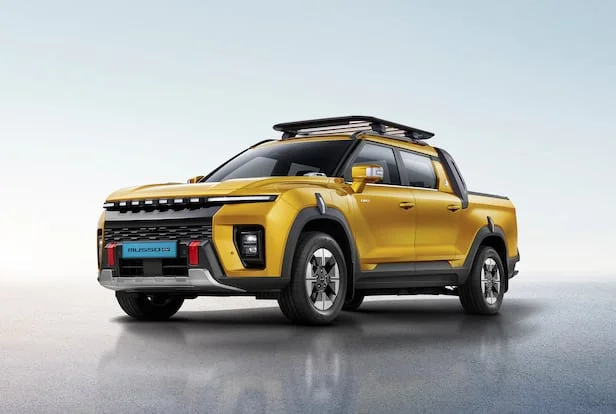
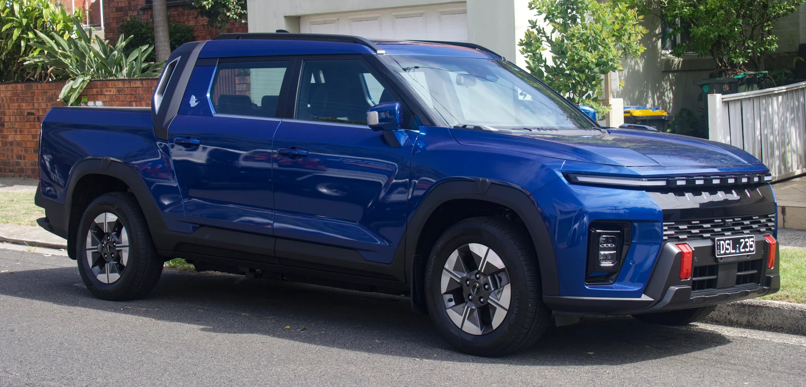
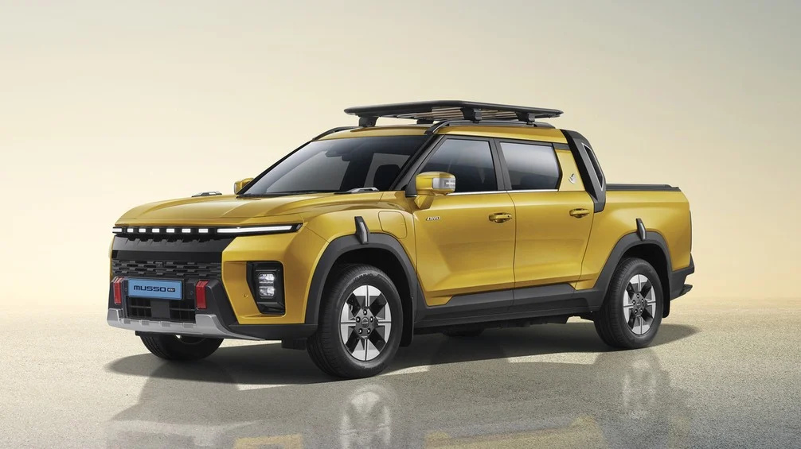

▲ 무쏘 EV는 국내 최초의 전기 픽업트럭으로, 화물차로 등록돼 파격적인 보조금을 받는다 ⓒ Damian B Oh, Wikimedia Commons (CC BY-SA 4.0)
KGM 무쏘 EV는 2025년 3월 출시 이후 국내 픽업트럭 시장의 판도를 바꿔놓은 모델입니다. 출시 6개월 만에 연간 판매 목표를 조기 달성했고, 지난해 한 해 동안 7,150대가 팔리며 국내 픽업 시장의 약 30%를 점유했습니다. 2026 중앙일보 올해의 차(COTY) 유틸리티 부문에도 이름을 올렸습니다. 무쏘 EV가 이렇게 흥행한 배경에는 '화물차'로 등록되면서 받는 파격적인 보조금이 있습니다.
| 구분 | 내용 |
|---|---|
| 차량 분류 | 전기 화물차 (승용 아닌 화물 등록) |
| 기본 가격 (MX 트림) | 4,800만원부터 |
| 실구매가 (서울 기준) | 3천만원대 후반 |
| 주행거리 | 2WD 401km / AWD 340km |
| 최대 적재량 | 500kg |
1. 화물차 등록의 힘 — 보조금으로 실구매가 3천만원대

▲ 무쏘 EV는 '화물차'로 등록되면서 승용 전기차보다 큰 폭의 보조금을 받는다 ⓒ KG모빌리티
무쏘 EV가 저렴하게 느껴지는 가장 큰 이유는 '화물차'로 등록되기 때문입니다. 승용 전기차와 달리 전기 화물차는 국고 보조금 639만원에 서울시 기준 지자체 보조금 191만원이 더해져, 기본 가격 4,800만원(세제 혜택 반영)인 MX 트림의 실구매가가 3천만원대 후반까지 내려갑니다. 여기에 소상공인이 구매하면 국고 보조금의 30%를 추가로 받을 수 있고, 사업자가 구매할 경우 차량 가격의 10%에 해당하는 부가가치세도 환급받을 수 있어 실질적인 부담은 더 줄어듭니다.
2. 제원 — 80.6kWh 배터리, 2WD 401km·AWD 340km

▲ 2WD 모델은 최고출력 207마력으로 401km를 인증받았다 ⓒ LuvsMG481, Wikimedia Commons (CC BY-SA 4.0)
무쏘 EV는 80.6kWh 용량의 리튬인산철(LFP) 배터리를 기본으로 탑재합니다. 후륜구동(2WD) 모델은 152.2kW 모터로 최고출력 207마력, 최대토크 34.6kgf·m을 내며 1회 충전 시 401km를 주행합니다. 사륜구동(AWD) 모델은 합산 출력 414마력, 최대토크 69.2kgf·m으로 훨씬 강력하지만, 무게와 구동 손실 탓에 주행거리는 340km로 짧아집니다. 데크 최대 적재량은 500kg, 견인 능력은 1.8톤이며, 트레일러를 매달았을 때 좌우 흔들림을 잡아주는 '트레일러 스웨이 컨트롤'도 갖췄습니다. 배터리는 10년 또는 100만km 보증이 적용되고, V2L 기능으로 캠핑이나 현장에서 외부 전력을 끌어 쓸 수 있습니다.
3. 시승기로 본 실제 평가 — "픽업이 아니라 도심용 SUV"

▲ 화물차 섀시를 쓰면서도 매끄러운 승차감을 갖췄다는 평가가 많다 ⓒ KG모빌리티
국내외 시승기에서 공통적으로 언급되는 부분은 승차감입니다. 화물차 섀시를 쓰면서도 매끄러움과 단단함이 조화를 이루는 승차감이 인상적이라는 평가가 많고, 한 시승기는 "픽업이 아니라 도심용 SUV"라는 표현으로 완성도를 요약했습니다. 전비도 공인 수치보다 실주행에서 더 잘 나오는 경우가 많아, 약 100km 주행 시 전비 5km/kWh를 기록했다는 시승 후기도 있습니다. LFP 배터리 특유의 안정성과 가격 경쟁력이 픽업트럭이라는 실용적 세그먼트와 잘 맞아떨어졌다는 평가가 지배적입니다.